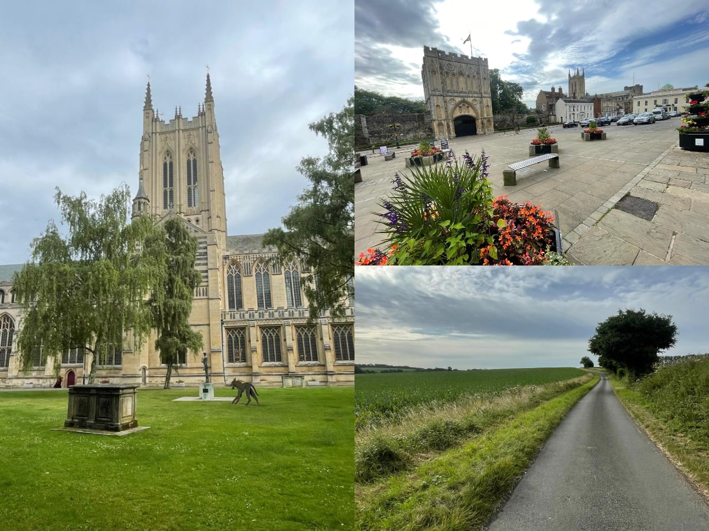
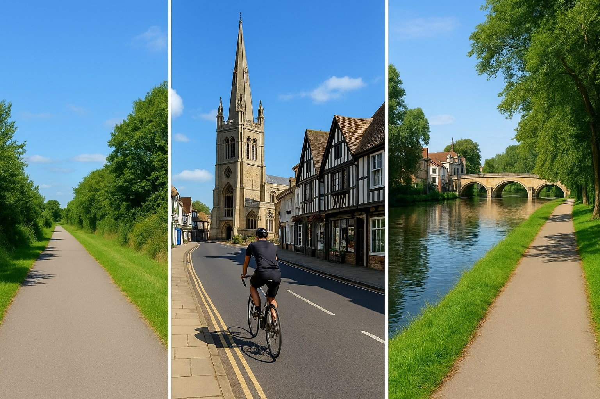

Preface:The gently rolling landscape around Cambridge, combined with a network of quiet A and B roads and the abundance of picturesque towns and villages scattered throughout East Anglia, makes this region ideal for cycle touring. I usually follow routes from the Sustrans National Cycle Network (NCN), as they are well signposted, largely free of heavy traffic, and often pass through charming town centres and local farm shops—making the journey both scenic and enjoyable. Most importantly, simply following the NCN markers and signs all along the way eliminates the need for very detailed route planning, removes the stress of constantly checking maps and allows me to enjoy the ride without worrying about navigation.
Transport:Most of my rides typically span between 80 and 100 kilometers, making them ideal for day rides over a weekend. I’m based in Cambridge, so if it’s not a round trip, I usually take the train back. If I’m starting from a different location, I take a train from Cambridge to the starting point, cycle to the destination, and then return by train. I prefer to ride on Saturdays, as train services tend to run like they do on weekdays. Sundays, on the other hand, are less reliable—with reduced schedules, delays, cancellations, or even dreaded rail replacement buses that don’t accommodate bicycles. Local bus services like Stagecoach also don’t accept bikes onboard, unless it’s a foldable one. I keep things simple by packing light—just the essentials, such as water and a few snacks—and I usually plan a couple of scenic stops along the way to refuel and soak in the surroundings.
Routes
Below, are a selection of routes I’ve taken, along with my personal experiences, highlights from the journeys, and practical tips to help you plan your own cycle adventures around this part of England.
1. Cambridge to Ipswitch (NCN 51)
2. Cambridge to Bedford (NCN 51)
3. Oxford to Milton Keynes (NCN 51)
4. Cambridge to Thetford (NCN 51,13)
5. Colchester to Bury St Edmunds (NCN 13)
6. Cambridge to King's Lynn (NCN 11)
7. Cambridge to Stansted and back (NCN 11)
Cambridge to Ipswitch - NCN 51
Transport: Direct train Ipswitch -> Cambridge (Greater Anglia)
The path begins with a smooth, mostly flat section leaving Cambridge, passing through pretty villages like Newmarket and Bury St Edmunds—ideal for a coffee stop
Some highlights include the scenic farmland and wooded paths near Ickworth Park and gentle climbs with great views around Needham Market. Surfaces are mostly tarmac and gravel; however, watch for rougher patches between Thurston and Stowmarket, especially after rain. While most of the route is quiet, some sections near Newmarket and Ipswich involve busier roads, so caution is needed around traffic pinch points.

Cambridge to Bedford - NCN 51
Transport: Train via London. Bedford -> King's Cross (Greater Northern);
St Pancras International -> Cambridge (EMR, ThamesLink)
The butter smooth path along the Guided Busway as you set off from Cambridge till St Ives is perfect for fast, focused riding—I've hammered it back and forth many times. From there, things get more relaxed as the route winds through villages and quiet lanes. A stop at Grafham Water makes a good spot for a sandwich break with great views. Between Huntingdon and Bedford, NCN 51 and 12 run together for a while, so keep an eye on the signs. After Great Barford, they split—NCN 12 heads south, NCN 51 goes west (I missed that once and added a few bonus miles). The scenery stays lovely through to Bedford, with rolling countryside and peaceful river crossings. It rained twice during this ride, which made things soggy but manageable with the right gear. Honestly, riding wet isn’t my favorite, but the route still made up for it. Overall, it’s a great day out on the bike—fast in places, scenic throughout, and with just enough navigation to keep things interesting.
Remember to stay alert at route junctions and to prepare for changing weather conditions to make the most of this delightful journey.
There are no direct trains from Bedford back to Cambridge, so you’ll need to go via London and switch lines—turning the return journey into a 2+ hour slog, which isn’t exactly what you want after knocking out a 100km ride.

Oxford to Milton Keynes - NCN 51
Transport: Mounted cycle on the car, drove to Milton Keynes, parked at the station.
Train Milton Keynes -> Oxford, via Coventry.
Note Stagecoach bus X5, 905 between Oxford and Cambridge does not allow cycles onboard.
There are no public transport options for bringing a bike from Cambridge to this section of NCN 51 (Varsity Way). As of this writing, the East West Rail project connecting Oxford and Cambridge is still incomplete. The train journey from Milton Keynes to Oxford via Coventry takes nearly two hours (costing £50), which meant I didn’t start riding from Oxford until almost midday—despite leaving Cambridge at 9 a.m. Be sure to reserve a bike slot in advance, as train are busy and staff are strict and will check your cycle ticket reservation before boarding.
The ride start off weaving through the city's academic ambiance before transitioning into the serene countryside beyond Kidlington.
Onwards the route guides you through picturesque villages like Bletchingdon, Wendlebury, Bicester, where I had a brief stop in a quite park near Bicester Village for a sandwich break.
Continuing on, the path meanders through Twyford and Winslow. A notable highlight is the Mursley Farm Shop where I indulged in some local cake and ice cream.
Approaching Milton Keynes, the landscape shifts to the city's innovative redway system—a network of over 200 miles of shared-use paths for cyclists and pedestrians. This segment offers a leisurely ride past Furzton Lake and Teardrop Lakes, ending near the central train station.
Cambidge to Thetford - NCN 51 + NCN 13
Route: NCN 51 Cambridge to Bury St Edmunds, NCN 13 Bury St Edmunds to Thedford
Transport: Direct train Thetford -> Cambridge (Greater Anglia)
bla bla

Colchester to Bury St Edmunds - NCN 13
Transport: Train Cambridge -> Colchester, via Ipswitch (Greater Anglia)
Bury St Edmunds -> Cambridge (Greater Anglia)

Cambridge to King's Lynn - NCN 11
Transport: Train King's Lynn -> Cambridge (Great Nothern)

Cambridge to Stansted and back - NCN 11
Transport: Round trip

P.S: I am using this blog post like a diary, updating it as I complete each stage (see last updated above).